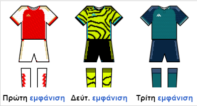

Η Άρσεναλ είναι αγγλικός ποδοσφαιρικός σύλλογος.
Η έδρα της είναι στην περιοχή Χόλογουεϊ στο Βόρειο Λονδίνο. Ιδρύθηκε το 1886 και από το 2006 αγωνίζεται στο Emirates Stadium χωρητικότητας 60.432 θεατών.Χρώματα του συλλόγου είναι το κόκκινο και το άσπρο και έχει ως έμβλημα το κανόνι, από το οποίο προήλθε το ψευδώνυμο "Οι Κανονιέρηδες".
Θεωρείται, μαζί με την Μάντσεστερ Γιουνάιτεντ, την Λίβερπουλ, την Μαντσεστερ Σίτι, την Τότεναμ και την Τσέλσι, μέλος των "έξι μεγάλων" του Αγγλικού Ποδοσφαίρου. Στην Ευρώπη, τα μεγαλύτερα της επιτεύγματα, είναι η κατάκτηση του Κύπελλο Διεθνών Εκθέσεων του 1970, καθώς και του Κυπέλλου Κυπελλούχων 1993-94.
